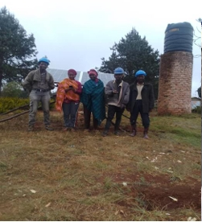

Our Impact
Making a positive contribution in nature conservation, ecotourism, environmental justice, sustainable engineering, and community empowerment.

💧 Waste Reduction
Circular Carriers Program
A simple, memorable initiative that ties together both ecological and human impact by turning waste paper into biodegradable bags, empowering local women.
Learn More →
⚡ Circular Economy
Sustainable Woodwork & Circular Craftsmanship
Empowering communities through eco-friendly furniture making and creative reuse of sawdust—turning waste into value and promoting sustainable livelihoods.
Learn More →
🎓 Professional Development
Nature-Based Solutions (NbS) Programs
Our Continuing Professional Development (CPD) programs cover crucial topics like Nature-based Solutions (NbS), and renewable energy systems including solar and wind power.
See Our Curriculum →